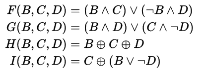
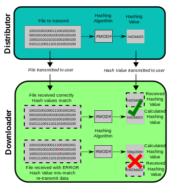

Introduction
The MD5 algorithm is a widely used hash function producing a 128-bit hash value. Although MD5 was initially designed to be used as a cryptographic hash function, it has been found to suffer from extensive vulnerabilities. It can still be used as a checksum to verify data integrity, but only against unintentional corruption.
Like most hash functions, MD5 is neither encryption nor encoding. It can be cracked by brute-force attack and suffers from extensive vulnerabilities as detailed in the security section below.
MD5 was designed by Ronald Rivest in 1991 to replace an earlier hash function MD4. The source code in RFC 1321 contains a "by attribution" RSA license. The abbreviation "MD" stands for "Message Digest."
The security of the MD5 has been severely compromised, with its weaknesses having been exploited in the field, most infamously by the Flame malware in 2012. The CMU Software Engineering Institute considers MD5 essentially "cryptographically broken and unsuitable for further use". Despite this known vulnerability, MD5 remains in use.
Algorithm and Example
MD5 processes a variable-length message into a fixed-length output of 128 bits. The input message is broken up into chunks of 512-bit blocks (sixteen 32-bit words); the message is padded so that its length is divisible by 512. The padding works as follows: first a single bit, 1, is appended to the end of the message. This is followed by as many zeros as are required to bring the length of the message up to 64 bits fewer than a multiple of 512. The remaining bits are filled up with 64 bits representing the length of the original message, modulo 264.
The main MD5 algorithm operates on a 128-bit state, divided into four 32-bit words, denoted A, B, C, and D. These are initialized to certain fixed constants. The main algorithm then uses each 512-bit message block in turn to modify the state. The processing of a message block consists of four similar stages, termed rounds; each round is composed of 16 similar operations based on a non-linear function F, modular addition, and left rotation. Figure 1 illustrates one operation within a round. There are four possible functions; a different one is used in each round:
Plain: The quick brown fox jumps over the lazy dog
Cipher: e4d909c290d0fb1ca068ffaddf22cbd0
History and Cryptanalysis
MD5 is one in a series of message digest algorithms designed by Professor Ronald Rivest of MIT (Rivest, 1992). When analytic work indicated that MD5's predecessor MD4 was likely to be insecure, Rivest designed MD5 in 1991 as a secure replacement. (Hans Dobbertin did indeed later find weaknesses in MD4.)
In 1993, Den Boer and Bosselaers gave an early, although limited, result of finding a "pseudo-collision" of the MD5 compression function; that is, two different initialization vectors that produce an identical digest.
In 1996, Dobbertin announced a collision of the compression function of MD5 (Dobbertin, 1996). While this was not an attack on the full MD5 hash function, it was close enough for cryptographers to recommend switching to a replacement, such as SHA-1 or RIPEMD-160.
On 1 March 2005, Arjen Lenstra, Xiaoyun Wang, and Benne de Weger demonstrated construction of two X.509 certificates with different public keys and the same MD5 hash value, a demonstrably practical collision.
Various MD5-related RFC errata have been published. In 2009, the United States Cyber Command used an MD5 hash value of their mission statement as a part of their official emblem.
On 24 December 2010, Tao Xie and Dengguo Feng announced the first published single-block (512-bit) MD5 collision.
In 2011 an informational RFC 6151 was approved to update the security considerations in MD5 and HMAC-MD5.
Applications
MD5 digests have been widely used in the software world to provide some assurance that a transferred file has arrived intact. For example, file servers often provide a pre-computed MD5 (known as md5sum) checksum for the files, so that a user can compare the checksum of the downloaded file to it. Most unix-based operating systems include MD5 sum utilities in their distribution packages; Windows users may use the included PowerShell function "Get-FileHash", install a Microsoft utility, or use third-party applications. Android ROMs also use this type of checksum.
As it is easy to generate MD5 collisions, it is possible for the person who created the file to create a second file with the same checksum, so this technique cannot protect against some forms of malicious tampering. In some cases, the checksum cannot be trusted (for example, if it was obtained over the same channel as the downloaded file), in which case MD5 can only provide error-checking functionality: it will recognize a corrupt or incomplete download, which becomes more likely when downloading larger files.
Historically, MD5 has been used to store a one-way hash of a password, often with key stretching. Due to the weaknesses described in the Security section, NIST does not include MD5 in their list of recommended hashes for password storage.
MD5 is also used in the field of electronic discovery, in order to provide a unique identifier for each document that is exchanged during the legal discovery process. This method can be used to replace the Bates stamp numbering system that has been used for decades during the exchange of paper documents. As above, this usage should be discouraged due to the ease of collision attacks.
Breaking the cipher
A collision attack exists that can find collisions within seconds on a computer with a 2.6 GHz Pentium 4 processor (complexity of 224.1). Further, there is also a chosen-prefix collision attack that can produce a collision for two inputs with specified prefixes within hours, using off-the-shelf computing hardware (complexity 239)The ability to find collisions has been greatly aided by the use of off-the-shelf GPUs.
In 2005, researchers were able to create pairs of PostScript documents and X.509 certificates with the same hash. Later that year, MD5's designer Ron Rivest wrote that "md5 and sha1 are both clearly broken (in terms of collision-resistance)".
On 30 December 2008, a group of researchers announced at the 25th Chaos Communication Congress how they had used MD5 collisions to create an intermediate certificate authority certificate that appeared to be legitimate when checked by its MD5 hash.